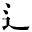

●幸田露伴『侠客の種類』
●南方熊楠『十二支考（１）虎に関する史話と伝説民俗』
●南方熊楠『十二支考（２）兎に関する民俗と伝説』
●徳田秋声『あらくれ』
●森鴎外『余興』
●アンリ・ド・レニエエ作、森鴎外（森林太郎）訳『復讐』
●尾崎紅葉『金色夜叉』
●三遊亭圓朝、鈴木行三校訂『菊模様皿山奇談』
●中原中也『山羊の歌』
●森鴎外『魚玄機』
●横光利一『旅愁』
●夏目漱石『草枕』
●夢野久作『謡曲黒白談』
| 1_77_79.gif | ||
| 1_92_51.gif |
●夏目漱石『人生』 |
|
| 1_92_52.gif |
●アナトール・フランス、芥川龍之介訳『バルタザアル』 |
|
| 1_92_53.gif |
●尾崎紅葉『金色夜叉』 ●幸田露伴『侠客の種類』 ●南方熊楠『十二支考（１）虎に関する史話と伝説民俗』 ●南方熊楠『十二支考（２）兎に関する民俗と伝説』 |
|
|
|
1_92_55.gif |
●尾崎紅葉『金色夜叉』 ●徳田秋声『あらくれ』 ●森鴎外『余興』 ●アンリ・ド・レニエエ作、森鴎外（森林太郎）訳『復讐』 |
| 1_92_56.gif |
●上田敏訳詩集『海潮音』 ●尾崎紅葉『金色夜叉』 ●三遊亭圓朝、鈴木行三校訂『菊模様皿山奇談』 ●中原中也『山羊の歌』 ●森鴎外『魚玄機』 ●横光利一『旅愁』 |
|
| 1_92_58.gif |
●尾崎紅葉『金色夜叉』 ●夏目漱石『草枕』 ●夢野久作『謡曲黒白談』 |
|  | 2_89_74.gif |
●内藤湖南『近畿地方に於ける神社』 |
|
|
2_89_83.gif |
●正岡子規『寒山落木 卷一』 |
| 2_89_92.gif |
●岡本綺堂『半七捕物帳 小女郎狐』 ●穂積陳重『法窓夜話』 |
|
| 2_89_93.gif |
●森鴎外『大塩平八郎』 ●森鴎外『青年』 |